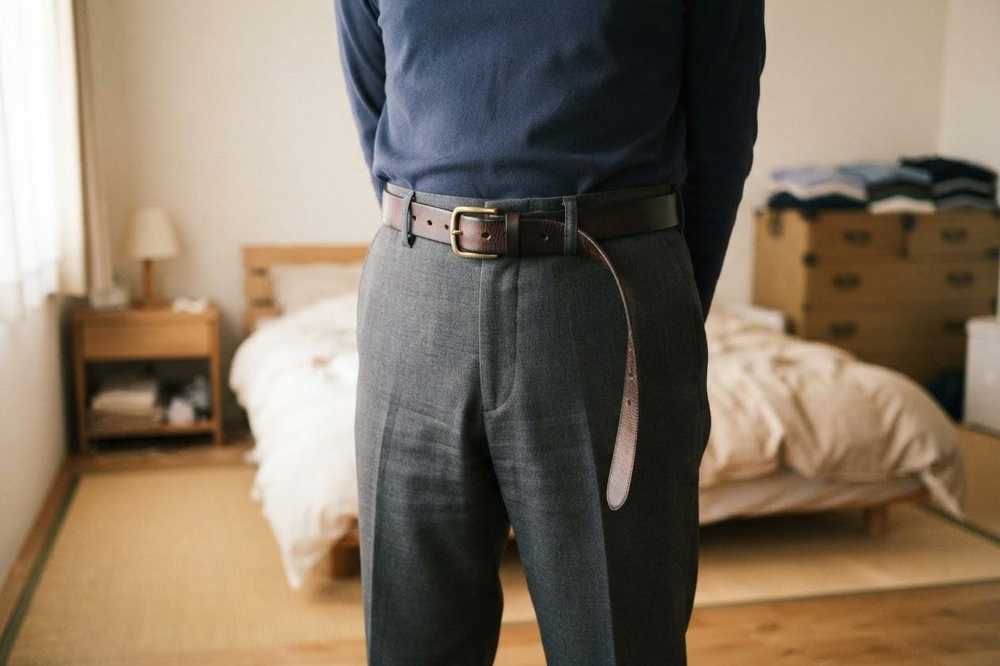

ダイエットをしていないのに体重が減ってきました。受診したほうがいいですか？
A. 回答食事を減らしたり運動を増やしたりしていないのに体重が落ちてきた場合は、一度調べておくと安心です。目安として、6〜12か月のあいだに体重の5%以上（体重60kgの方なら約3kg、50kgの方なら約2.5kg）が減った状態は「意図しない体重減少」と呼ばれ、原因を確認することがすすめられています。背景は糖尿病や甲状腺の病気、胃腸の不調、気分の落ち込みなど幅広く、必ずしも重い病気とはかぎりません。多くは検査で見当をつけられますので、心配を抱えたままにせず内科でご相談ください。

「意図しない体重減少」とはどのくらいから？
体重は季節や生活の変化で1〜2kg程度動くことがあり、少し減っただけで心配しすぎる必要はありません。医学的には、意識してダイエットをしていないのに6〜12か月で体重の5%以上が減った場合を、原因を調べる目安とすることが多いとされています。体重計の数字を覚えていない場合でも、「ベルトの穴が2つ分ゆるくなった」「指輪や入れ歯が合わなくなった」「周囲から痩せたと言われる」といった変化が手がかりになります。
こんな変化はありませんか？
- ここ半年で、思い当たる理由なく体重が減った
- ズボンやスカートがゆるくなった
- 食欲が落ちた、または食べているのに痩せる
- のどが渇きやすく、水分や尿の量が増えた
- 動悸、汗をかきやすい、手のふるえがある
- お腹の張り、下痢や便秘、便の色の変化がある
- 気分が沈む、眠れない日が続いている
背景として考えられる主な原因
体重減少の背景は一つとはかぎらず、次のようなものが一般的に知られています。
- 糖尿病などの代謝の病気：血糖を利用しにくくなると、体が筋肉や脂肪をエネルギーとして使うため体重が減ることがあります。のどの渇き、尿の回数が増える、だるさを伴う場合があります。
- 甲状腺機能亢進症（バセドウ病など）：甲状腺ホルモンが過剰になり代謝が高まる状態です。動悸、汗をかきやすい、暑がり、手のふるえ、食欲はあるのに痩せる、といった症状を伴うことがあるとされています。
- 胃腸・消化器の病気：胃炎や胃・十二指腸潰瘍、炎症性腸疾患、慢性膵炎（すいえん）などで、食欲が落ちたり栄養を吸収しにくくなったりして体重が減る場合があります。
- 悪性疾患（がん）：頻度としては一部ですが、体重減少が最初のサインになることがあります。だからこそ、早い段階で調べておく意味があります。
- 気分の落ち込み・うつ状態、生活の変化：食欲の低下から体重が減ることがあります。ご高齢の方では、歯や飲み込みの問題、味覚の変化、内服薬の影響などが重なることも少なくありません。
- 慢性の感染症や炎症：長引く感染症や慢性の炎症が背景にある場合もあります。
受診の目安
次のようなサインは、受診のタイミングを考える目安になります。
すぐに受診を検討してください
- 黒くてタール状の便が出た、または吐血・下血があった
- 食べ物や水分が飲み込みにくく、ほとんど食事がとれない
- 強い腹痛、繰り返す嘔吐、皮膚や白目が黄色い（黄疸）
- 血の混じった痰が出る、息苦しさが強い
- 短期間で急激に痩せ、立ち上がるのもつらいほど体力が落ちている
早めの受診をおすすめします
- 6〜12か月で体重の5%以上（60kgの方で約3kg）減った
- 食欲はあるのに体重が減っていく
- のどの渇き・尿の増加・強いだるさを伴う
- 動悸や手のふるえ、汗のかきやすさを伴う
- 下痢や便秘、腹部の張りが続いている
- 微熱や寝汗が長く続いている
- 健診で貧血や血糖値の異常を指摘されたことがある
- 気分の落ち込みが続き、食事の量が減っている
当院での対応と検査
いなだ医院は内科・消化器内科（胃腸科）を標榜しており、体重減少については、いつ頃からどのくらい減ったか、食欲や便通の変化、内服中のお薬などをうかがったうえで、必要に応じて血液検査（血糖・甲状腺ホルモン・貧血・炎症の指標など）、尿検査、腹部エコー、胸部レントゲンなどを組み合わせて原因を確認していきます。胃や腸の中を直接確かめたほうがよいと判断した場合には、新世代の内視鏡システムによる胃カメラ・大腸カメラをご案内できます。鼻から挿入する経鼻内視鏡にも対応しています。
受診にあたっての実務的なご案内
- 予約：初診は予約なしでも当日受診いただけます。内視鏡検査は事前準備が必要なため、診察のうえで日程を決める予約制です。
- 時間の目安：初回の診察と採血・尿検査であれば、おおむね30分〜1時間程度をみておいてください。血液検査の結果は、項目により当日または後日のご説明となります。
- 費用：症状があって行う診察・検査は保険診療の対象となります。ご負担額は検査内容によって変わりますので、詳しくは受付またはお電話でお問い合わせください。
- お持ちいただくもの：健康保険証（マイナ保険証）、お薬手帳、直近の健診結果。ご自宅で測った体重の記録があると、減り方の経過がわかり大変参考になります。
- 診療時間：朝7時から診療しています。お仕事前の受診もご利用ください。
受診時に伝えていただきたいこと
- いつ頃から、何kgくらい減ったか（もとの体重も）
- 食欲は落ちているか、それとも変わらない・増えているか
- 便通や便の色、腹痛、吐き気などの変化
- のどの渇き、動悸、汗、ふるえ、発熱、寝汗の有無
- 現在飲んでいるお薬（お薬手帳をお持ちください）
- 生活の変化（引っ越し、ご家族の状況、気分の落ち込みなど）
参考にした情報
「なんとなく痩せてきた」段階でも構いません。原因を確かめておくと安心です。朝7時から診療しています。
最終更新：2026年8月26日